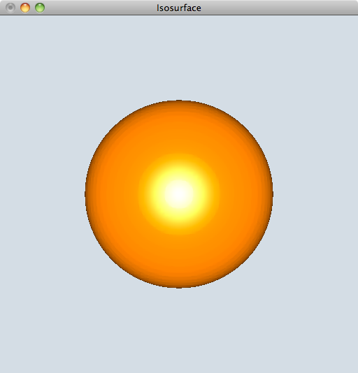

例 等値面の可視化
「例 構造型ボリュームデータの作成」で作成した構造型ボリュームデータを改良して等値面を描画するプログラムを作成します．
1. 作業ディレクトリの作成
作業ディレクトリに「IsoSurface」というディレクトリを作成して，移動して下さい．
$ mkdir IsoSurface
$ cd IsoSurface
2. main.cpp の作成
「例 構造型ボリュームデータの作成」で作成したmain.cpp をコピーして，ファイルへエクスポートするところから下を削除して下さい．
#include <kvs/Vector3>
#include <kvs/StructuredVolumeObject>
#include <kvs/StructuredVolumeExporter>
#include <kvs/AVSField>
inline float func( float x, float y, float z ) {
return ( 3.0 - x*x - y*y - 4.0*z*z );
}
int main( int argc, char** argv )
{
// グリッドサイズ
kvs::UInt32 gridNum = 64;
const kvs::Vector3ui resol( gridNum, gridNum, gridNum );
// ボリュームデータの値を格納するためのメモリの割り当て
kvs::ValueArray<float> data( gridNum * gridNum * gridNum );
// dataにを操作するためのポインタ変数
float* pdata = data.data( );
float min = -2.0, max = 2.0;
float dt = (float)(max - min)/(float)(gridNum-1);
kvs::UInt64 index = 0;
for(int k=0; k<gridNum; k++) {
for(int j = 0; j<gridNum; j++) {
for(int i=0; i< gridNum; i++) {
float x = (float)min + (float)i*dt;
float y = (float)min + (float)j*dt;
float z = (float)min + (float)k*dt;
// 関数値を評価してdataへ格納
pdata[ index++ ] = func(x, y, z) ;
}
}
}
size_t veclen = 1.0;
// 構造型ボリュームオブジェクトの作成
kvs::StructuredVolumeObject *volume = new kvs::StructuredVolumeObject();
volume->setGridType( kvs::StructuredVolumeObject::Uniform );
volume->setResolution( resol );
volume->setVeclen( veclen );
volume->setValues( data );
3. ボリュームデータの最小値と最大値を計算する
kvs::StructuredVolumeObject が最小値・最大値をもっているかどうかは，
kvs::StructuredVolumeObject クラスのメソッド hasMinMaxValues()の値がtrueか falseかで知ることができます．
もっていなかった場合は，ボリュームデータのもつ密度値 （values） の最小値・最大値を計算するメソッド
updateMinMaxValues()
を実行して，最小値・最大値を計算します．
// ボリュームデータが最大値・最小値をもっているかチェック
if ( !volume->hasMinMaxValues() )
volume->updateMinMaxValues(); // もっていなければ計算する
4. 表示したい等値面の値をキーボードから入力する
キーボードから等値面の値を入力し，入力された値がボリュームデータのもつ最小値・最大値の範囲を超えていないかチェックする．
// 等値面の値をキーボードから入力する
double input_iso, iso;
// ボリュームデータの最小値
double value_min = static_cast<double>( volume->minValue() );
// ボリュームデータの最大値
double value_max = static_cast<double>( volume->maxValue() );
std::cout << "Input Isolevel [ " << value_min << " - " << value_max << "] : ";
// キーボードから入力した値を取得する
std::cin >> input_iso;
// 最大値と最小値を超えていないかチェック
if ( input_iso < value_min ) iso = value_min;
else if( input_iso > value_max ) iso = value_max;
else iso = input_iso;
5. 等値面を作成する
KVSには，kvs::StructuredVolumeObject からマーチングキューブ法を使って等値面を生成し，
kvs::PolygonObject を作成するクラス kvs::Isosurface があります．
これまでと同様にkvs::Isosurfacce のコンストラクタを用いて変数宣言と同時に値を代入します．
コンストラクタの要求する引数は
- ボリュームデータ（kvs::StructuredVolumeObject ）
- 等値面の値
- 法線の種類
です．
法線の種類はポリゴンオブジェクトを作成したときと同様にenum型 {VertexNormal,PolygonNormal} で指定します．
kvs::PolygonObject* object =
new kvs::Isosurface( volume,
iso,
kvs::PolygonObject::VertexNormal ); // 法線の種類
6. ポリゴンオブジェクトが作成できたかチェックする
ポリゴンオブジェクトが正しく作成できたかのチェックを行う．
また，正しく作成できていた場合には，ボリュームデータは不要になるため，削除する．
// ポリゴンオブジェクトが正しく作成できたか？
if ( !object )
{
kvsMessageError( "Cannot create a polygon object." );
delete volume;
return( false );
}
// 不要になったボリュームデータを削除する
delete volume;
7. 描画
GLUTによる可視化処理を行います．
registerObjectには，kvs::Isosurfaceクラスを使って作成したobject を登録します．
// Screenクラスの生成と設定
kvs::glut::Screen screen( &app );
screen.registerObject( object );
screen.setGeometry( 0, 0, 512, 512 );
screen.setTitle( "Isosurface");
screen.show();
// イベント待ち
return( app.run() );
8. ヘッダファイル
例3以外に使用したKVSクラスを追加してインクルードします．
ここでは，新たに
- kvs::PolygonObject
- kvs::Isosurface
- kvs::glut::Screen
- kvs::glut::Application
を追加しました．
#include <kvs/PolygonObject>
#include <kvs/Isosurface>
#include <kvs/glut/Application>
#include <kvs/glut/Screen>
9. まとめ
以上をまとめたプログラムはこちら： Isosurface.tgz
10. コンパイルと実行
作成したプログラムをコンパイル，実行してみましょう．
KVSプログラムをコンパイルするためにはkvsmakeコマンドを用いてMakefileを作成すると簡単にコンパイルを行うことができます．
$ kvsmake -G <-- Makefile の作成
$ kvsmake <-- コンパイル
エラーなくコンパイルできたら，実行してみましょう．
実行すると，最小値・最大値が出力され，描画したい等値面の値を入力するように促されるので，
とりあえず，『0.0』を入力して零等値面を描画して下さい．
$ ./Isosurface
Input Isolevel [ -21 - 2.99395] : 0.0
例3と同様の等値面が描画できることが確認できると思います．

問題 複数等値面の描画
上述の例で，等値面を作成する際に指定した法線の種類を面法線（ PolygonNormal ）に変更してみよう．
変更した結果どのように絵が変わるのかを確認してみましょう．
さらに，等値面をもう1つ作成（新たな PolygonObject を作成）し，不透明度の違う2つの等値面を描画してみよう．
（ヒント）
もう1つの等値面は
kvs::PolygonObject* object2
として1つめの等値面と同様にして（等値面の値を変更して）作成します．
不透明度はPolygonObject クラスのもつメソッドを利用します．
object->setOpacity( 10 );
object2->setOpacity( 100 );
setOpasity 関数の引数の型は kvs::UInt8 です．
それぞれのオブジェクトに不透明度を設定することができます．
また，２つのオブジェクトをそれぞれスクリーンに登録することができます．
screen.registerObject( object );
screen.registerObject( object2 );
Modefied at June 16, 2013
at April 27, 2017